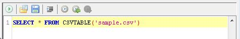

画面上部のメニューバーから「ツール」＞「SQL実行」を選択します。
SQL実行用のウインドウが表示されます。
CSVファイルを表示します。ファイル名をダブルクリックすることで、Eにテーブル名が自動入力されます。
Aで選択中のファイルのプロパティを表示します。
Aで選択中のファイルの中身を表示します。
列名のみの表示 または 先頭5行のプレビュー を表示します。
列名をダブルクリックすることで、Eに列名が自動入力されます。
アイコンをクリックすることで以下の操作が行えます。
SQLを入力するためのエリアです。
1.SQLエディターに「SELECT * FROM」と入力します。
2.CSVファイル一覧ビューのファイル名をダブルクリックします。テーブル名が自動入力されます。


3.SQLエディターに「WHERE」を入力します。

4.CSV内容ビューの列名をダブルクリックします。列名が自動入力されます。


5.SQLエディターに「= 'abc'」を入力します。

6.以上でSQLが完成しました。ツールバーのSQL実行アイコンをクリックし、SQLを実行します。

7.SQLの実行が完了すると、出力方法の選択ダイアログが表示されます。ここでは「新しいタブに表示する」を選択します。

8.SQLの実行結果が表示されます。